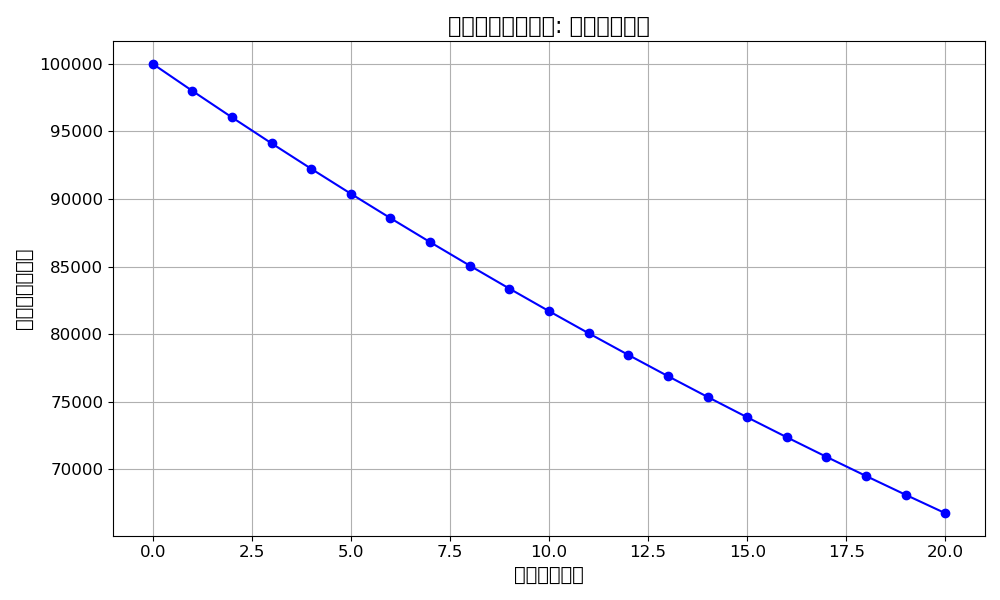

資金管理とは、自分の資金をいかに守りつつ、効率的に増やしていくかを考えることです。初心者は特に「損失を最小限に抑える」ことが重要です。
例えば、初期資金が10万円の場合、一度にすべてを失うリスクを取るのではなく、1回のトレードで失ってもよい資金をあらかじめ決めておくことが鍵です。一般的には、1回のトレードで失うリスクは総資金の2%以内に収めるのが理想です。
損切りを設定せずにトレードを続けると、資金は驚くほど早く減ってしまいます。以下の図は、1回のトレードで2%のリスクを取り、連続して損失した場合の資金の推移を表しています。
